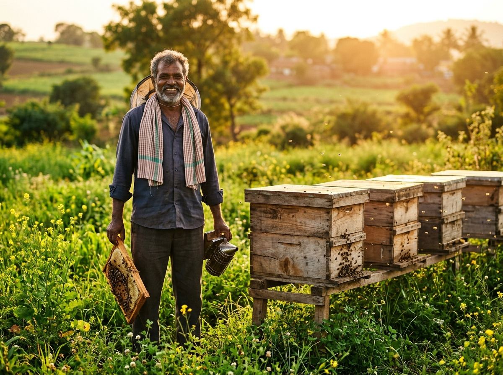
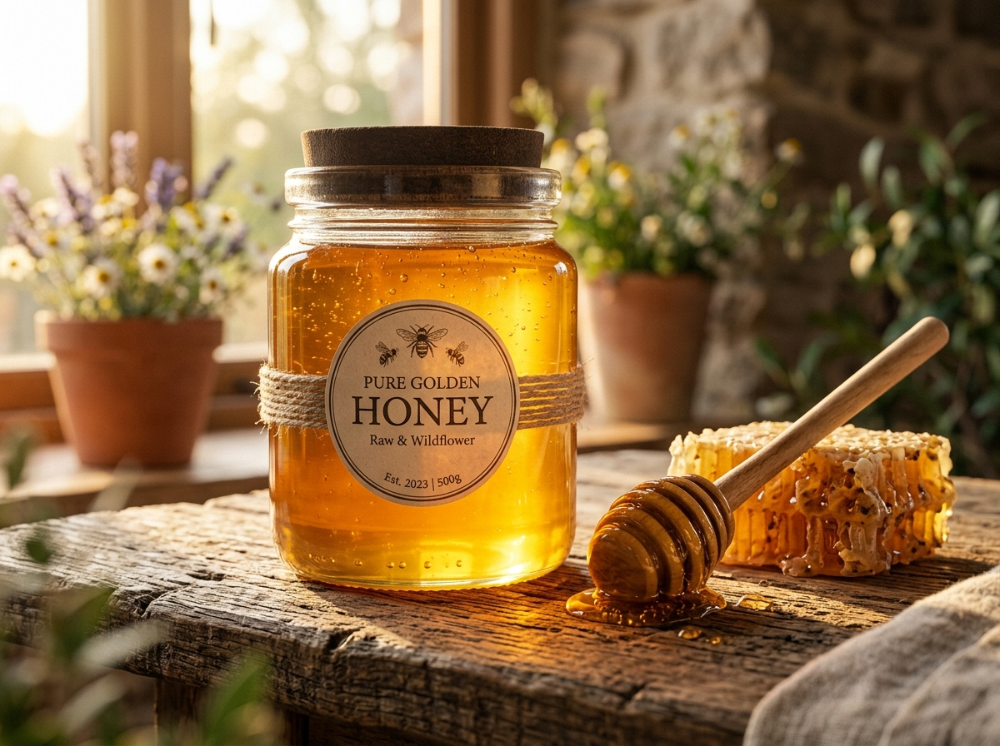

Transforming Apiculture,
Empowering Farmers.
We believe that the hardest workers in the honey supply chain deserve the greatest reward. HoneyChain restores trust, purity, and fairness.

Up to 60% of profits are absorbed by middlemen and adulterated market alternatives.
The Challenge
The Plight of the Honest Beekeeper
Generations of Indian beekeepers harvest pure, raw honey with immense labor and care. Yet, when they enter the market, they face an insurmountable barrier: adulteration and opaque supply chains.
-
close
Fake Honey Floods: Cheap, sugar-syrup-laced substitutes devalue authentic honey, forcing farmers to sell at rock-bottom prices.
-
close
Predatory Middlemen: Multiple layers of intermediaries obscure the honey's origin, absorbing the majority of the profit.
-
close
Lack of Trust: Consumers cannot verify if the honey they purchase is raw or processed, hurting honest producers.
Our Solution
Traceability Powered by Truth
We combine cutting-edge IoT hardware with the immutable Polygon PoS blockchain to create an ecosystem where pure honey is proven, protected, and prized.
IoT Smart Hives
Our rugged nodes monitor weight, temperature, and humidity directly at the apiary. Telemetry is logged instantly, proving the honey's origin and preventing tampering before extraction.
Blockchain Provenance
Every batch undergoes NMR testing, and the lab results are hashed onto the Polygon network. A cryptographic proof ensures the data cannot be altered by anyone.
Direct-to-Consumer
A serialized QR code is placed on every jar. Consumers scan it to see the entire journey—from the exact hive location to the final lab test—and buy directly from farmers.
The HoneyChain Advantage
Why Our Solution is Superior
Unlike traditional certifiers who rely on paper trails and physical audits that can be easily forged, HoneyChain builds a Trustless System.
Unforgeable Records
Because we use decentralized ledgers (Web3), a certification isn't just a piece of paper—it's a mathematically proven state that cannot be retroactively modified.
Real-Time Yield Insights
Our hardware doesn't just track honey; it boosts farmer yield by 20% through predictive load-cell monitoring, preventing swarming and optimizing harvest times.
Maximized Farmer Margins
By mathematically proving purity, farmers command a premium price on our decentralized marketplace, increasing their take-home revenue by up to 2.5x.
